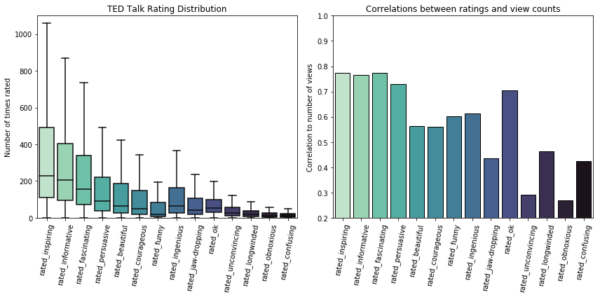

- Sun 20 May 2018
- Data analysis
- William Miller
- #data analysis, #TED.com, #TED talks
Not long ago, I scraped all of the data from all of the talks posted on TED.com. In this post, I intend to briefly explore what is meant when we ask which TED talk is "most persuasive" and evaluate which TED talk we might regard as the most persuasive ever given.
import numpy as np
import pandas as pd
import matplotlib.pyplot as plt
import seaborn as sns
import datetime
from collections import defaultdict
TED_basic_df = pd.read_csv('TED_basic.csv', index_col=0)
TED_extracted_df = pd.read_csv('TED_extracted.csv', index_col=0)
TED_ratings_df = pd.read_csv('TED_ratings.csv', index_col=0)
TED_tags_df = pd.read_csv('TED_tags_reduced.csv', index_col=0)
last_update = datetime.datetime.strptime('4/30/2018', '%m/%d/%Y')
TED_df = TED_basic_df.join([TED_extracted_df, TED_ratings_df])
TED talk rating distribution
Before evaluating the question of which TED talk is most persuasive, let's get a general idea of how people tend to rate TED talks. There may be patterns that will be of use towards answering our question, or at least an interesting insight or two that relates to it. To do this, we should look at two plots - one that shows how often different ratings tend to be given, and another that shows how view counts and ratings are related.
plt.figure(figsize=(12,6))
plt.subplot(1,2,1)
rating_order = list(TED_ratings_df.mean().sort_values(ascending=False).index)
sns.boxplot(data=TED_ratings_df, order=rating_order, showfliers=False, palette='mako_r')
plt.title('TED Talk Rating Distribution')
plt.ylim(0,1100)
plt.ylabel('Number of times rated')
plt.xticks(rotation=80)
plt.subplot(1,2,2)
rating_views = dict([[a, TED_ratings_df[a].corr(TED_df['view_count'])] for a in rating_order])
sns.barplot(x=list(rating_views.keys()), y=list(rating_views.values()), palette='mako_r', edgecolor = "0")
plt.title('Correlations between ratings and view counts')
plt.ylim(0.2, 1)
plt.ylabel('Correlation to number of views')
plt.xticks(rotation=80)
plt.tight_layout()
plt.show()

There are a couple of important pieces of information we can take away from these plots.
First, a rating of "persuasive" is not very common overall. "Inspiring" is over twice as common with a lot more talks with unusually high number of this rating. Ratings of "informative" and "fascinating" are also ratings that are a lot more common.
Second, while "persuasive" is not the most commonly given rating, talks that are often rated as such do tend to have a large number of views. It appears that talks that are rated "persuasive" do draw viewers nearly as much as those that are "inspiring", "informative", or "fascinating" even though those ratings are far more common.
What do we mean by "most persuasive"?
Especially in data analysis, it is very important to know exactly what question it is that we are trying to answer. It turns out, the question of which TED talk is "most persuasive" is pretty ambiguous, and there are multiple ways to think about what constitutes "most persuasive".
Though there are likely more ways this question could be taken, there are three ways of thinking about "most persuasive" that I wish to explore here.
- "Most persuasive" could be considered a talk that has been rated as persuasive by the largest number of people overall.
- "Most persuasive" could be considered a talk that has been rated as persuasive by the largest percentage of viewers.
- "Most persuasive" could be considered a talk that has been rated as persuasive most frequently since it was posted.
Which TED talk has been rated "persuasive" by the most viewers?
most_persuasive_df = TED_df['rated_persuasive'].sort_values(ascending=True)[-10:]
sns.barplot(x=most_persuasive_df.values, y= TED_df['title'].iloc[most_persuasive_df.index].values,
palette='magma')
plt.title('Top 10 Talks Rated Persuasive by Count')
plt.xlabel('Number of "persuasive" ratings')
plt.show()
I'm including links to these talks below, in case anyone is as intrigued by then as I am.
ranks_dict = defaultdict(int)
most_persuasive_urls = TED_df.iloc[TED_df['rated_persuasive'].sort_values(ascending=False)[:10].index]['url']
for i, u in enumerate(most_persuasive_urls.values):
# print('rank ' + str(i + 1) + ':',u)
if u not in list(ranks_dict.keys()):
ranks_dict[u] = 10-i
else:
ranks_dict[u] += 10-i
rank 1: https://www.ted.com/talks/ken_robinson_says_schools_kill_creativity
rank 2: https://www.ted.com/talks/simon_sinek_how_great_leaders_inspire_action
rank 3: https://www.ted.com/talks/amy_cuddy_your_body_language_shapes_who_you_are
rank 4: https://www.ted.com/talks/dan_pink_on_motivation
rank 5: https://www.ted.com/talks/brene_brown_on_vulnerability
rank 6: https://www.ted.com/talks/shawn_achor_the_happy_secret_to_better_work
rank 7: https://www.ted.com/talks/susan_cain_the_power_of_introverts
rank 8: https://www.ted.com/talks/jamie_oliver
rank 9: https://www.ted.com/talks/chimamanda_adichie_the_danger_of_a_single_story
rank 10: https://www.ted.com/talks/julian_treasure_how_to_speak_so_that_people_want_to_listen
The TED talk that the most people have rated persuasive appears to be "Do Schools Kill Creativity?" by Ken Robinson. It was given nearly 12 years ago in June of 2006, and it has been viewed a staggering 50.9 million times. Let's look at what other ratings people assigned to it.
plt.figure(figsize=(8,6))
plot_df = TED_ratings_df.copy()
plot_df = plot_df.iloc[plot_df['rated_persuasive'].idxmax].sort_values(ascending=False)
sns.barplot(x=plot_df.index, y=plot_df.values)
plt.title('Ratings Distribution for "Do Schools Kill Creativity?"')
plt.ylabel('Number of ratings')
plt.xticks(rotation=80)
plt.show()
Does this constitute "most persuasive"?
This is an interesting result - the TED talk that has been rated as "persuasive" by the most people was rated as "inspiring", "funny, "fascinating" by far more people. There could be a number of reasons for this, and I'd like to take a bit of time to explore them.
- As we saw above, the rating "persuasive" is simply not given as frequently as other ratings for all videos. Ratings like "inspiring" or "fascinating" are used more frequently than others like "persuasive".
- This talk could have been both viewed and rated many more times than other talks, giving it a total number of ratings that is higher than other talks. It might have more "persuasive" ratings that other talks just because it's been viewed and rated a larger number of times overall.
Which talk was rated persuasive by the highest percentage of viewers?
In order to do this, it is first necessary to take the number of ratings each talk has received by category, and then to divide the number or ratings by the number of views. Having done that, I can then see how many viewers chose to rate which talks "persuasive" more often than other talks and then rank them.
def divide_df_series(df, series):
labels = list(df.columns)
divided_df = pd.DataFrame()
for label in labels:
divided_df[label] = df[label] / series
return divided_df
ratings_views_df = divide_df_series(TED_ratings_df, TED_df['view_count'])
ratings_views_persuasive = ratings_views_df['rated_persuasive'].sort_values(ascending=True)[-10:]
sns.barplot(x=ratings_views_persuasive.values, y=TED_df['title'].iloc[ratings_views_persuasive.index].values,
palette='magma')
x_tick_locs = np.arange(0,ratings_views_persuasive.max(),0.0005)
ax = plt.gca()
ax.set_xticks(x_tick_locs)
ax.set_xticklabels([x*1000 for x in x_tick_locs])
plt.title('Top 10 Talks Rated Persuasive by Percentage')
plt.xlabel('Ratings per thousand views')
plt.show()
Once again, here are links to these 10 talks.
most_persuasive_urls = TED_df.iloc[ratings_views_df['rated_persuasive'].sort_values(ascending=False)[:10].index]['url']
for i, u in enumerate(most_persuasive_urls.values):
# print('rank ' + str(i + 1) + ':',u)
if u not in list(ranks_dict.keys()):
ranks_dict[u] = 10-i
else:
ranks_dict[u] += 10-i
rank 1: https://www.ted.com/talks/dan_gross_why_gun_violence_can_t_be_our_new_normal
rank 2: https://www.ted.com/talks/ngozi_okonjo_iweala_on_aid_versus_trade
rank 3: https://www.ted.com/talks/david_keith_s_surprising_ideas_on_climate_change
rank 4: https://www.ted.com/talks/andrew_mwenda_takes_a_new_look_at_africa
rank 5: https://www.ted.com/talks/philip_howard
rank 6: https://www.ted.com/talks/bjorn_lomborg_sets_global_priorities
rank 7: https://www.ted.com/talks/larry_lessig_says_the_law_is_strangling_creativity
rank 8: https://www.ted.com/talks/garth_lenz_images_of_beauty_and_devastation
rank 9: https://www.ted.com/talks/david_deutsch_on_our_place_in_the_cosmos
rank 10: https://www.ted.com/talks/dan_dennett_on_dangerous_memes
By the criteria of being rated persuasive by the largest percentage of viewers, the ten talks in the chart above are the most persuasive. "Why gun violence can't be our new normal" by Dan Gross, posted in March of 2016, is rated as the most persuasive. In contrast with the talk that satisfied the first criteria, this talk was posted relatively recently. It was given just over a year ago, and it has only received 1.2 million views compared to the 50.9 million views of "Do schools kill creativity?" For the sake of curiousity, let's once again look at the ratings distribution for the top-ranked talk.
plt.figure(figsize=(8,6))
plot_df = ratings_views_df.iloc[ratings_views_df['rated_persuasive'].idxmax].sort_values(ascending=False)
sns.barplot(x=plot_df.index, y=plot_df.values)
plt.title('Ratings Distribution for "Why gun violence can\'t be our new normal"')
plt.ylabel('Percentage of ratings')
plt.xticks(rotation=80)
plt.show()
The ratings distribution here looks very different from that of "Do schools kill creativity?". "Inspiring" is still the top rating, which follows from the observation we made about it being the most commonly given rating by far, but "persuasive" is not far behind it at all. Also in contrast to the last talk, the ratings "informative" and "courageous" were given more frequenty, and almost no one rated this talk "funny".
Does this constitute "most persuasive"?
There are some potential flaws with saying that the highest percentage of viewers rating this persuasive makes it the most persuasive. To list a couple:
- This talk was not given very long ago, so it is possible that while a high percentage of people have found it persuasive in the past year, this might not hold true for future years.
- Compared to other talks on TED, this talk has not received many views. It could be that fewer people are drawn to this particular topic, and if they are drawn to it, they may be more likely to rate it "persuasive" regardless of whether or not it changed their minds on the topic.
Which talk was rated persuasive most frequently?
TED_df['date_str'] = TED_df['date']
TED_df['date'] = pd.to_datetime(TED_df['date_str'])
TED_df['days_posted'] = pd.to_timedelta(last_update-TED_df['date'], unit='D')
TED_df['days_posted'] = TED_df['days_posted'].dt.days.astype(int)
ratings_time_df = divide_df_series(TED_ratings_df, TED_df['days_posted'])
ratings_time_persuasive = ratings_time_df['rated_persuasive'].sort_values(ascending=True)[-10:]
sns.barplot(x=ratings_time_persuasive.values, y=TED_df['title'].iloc[ratings_time_persuasive.index].values,
palette='magma')
# x_tick_locs = np.arange(0,ratings_views_persuasive.max(),0.0005)
# ax = plt.gca()
# ax.set_xticks(x_tick_locs)
# ax.set_xticklabels([x*1000 for x in x_tick_locs])
plt.title('Top 10 Talks Rated Persuasive by Frequency')
plt.xlabel('Average "persuasive" rating per day')
plt.show()
most_persuasive_urls = TED_df.iloc[ratings_time_df['rated_persuasive'].sort_values(ascending=False)[:10].index]['url']
most_persuasive_urls
for i, u in enumerate(most_persuasive_urls.values):
# print('rank ' + str(i + 1) + ':',u)
if u not in list(ranks_dict.keys()):
ranks_dict[u] = 10-i
else:
ranks_dict[u] += 10-i
rank 1: https://www.ted.com/talks/wendy_suzuki_the_brain_changing_benefits_of_exercise
rank 2: https://www.ted.com/talks/dan_gross_why_gun_violence_can_t_be_our_new_normal
rank 3: https://www.ted.com/talks/amy_cuddy_your_body_language_shapes_who_you_are
rank 4: https://www.ted.com/talks/simon_sinek_how_great_leaders_inspire_action
rank 5: https://www.ted.com/talks/guy_winch_how_to_fix_a_broken_heart
rank 6: https://www.ted.com/talks/justin_baldoni_why_i_m_done_trying_to_be_man_enough
rank 7: https://www.ted.com/talks/zachary_r_wood_why_it_s_worth_listening_to_people_we_disagree_with
rank 8: https://www.ted.com/talks/laura_vanderkam_how_to_gain_control_of_your_free_time
rank 9: https://www.ted.com/talks/tim_urban_inside_the_mind_of_a_master_procrastinator
rank 10: https://www.ted.com/talks/zeynep_tufekci_we_re_building_a_dystopia_just_to_make_people_click_on_ads
By the criteria of being rated persuasive by the largest percentage of viewers, the ten talks in the chart above are the most persuasive. "The brain-changing benefits of exercies" by Wendy Suzuki, posted in February of 2018, is rated as the most persuasive. This talk was posted most recently of any of the talks that might be considered the most persuasive so far. It was given just over 3 months ago, but it has received nearly 2.4 million views compared to the 1.2 million views of "Why gun violence can't be our new normal" and the 50.9 million views of "Do schools kill creativity?". Both of these have been posted on TED.com for far longer, so it has received a remarkably large number of views in a short time. Here is the ratings distribution for this this talk.
plt.figure(figsize=(8,6))
plot_df = ratings_time_df.iloc[ratings_time_df['rated_persuasive'].idxmax].sort_values(ascending=False)
sns.barplot(x=plot_df.index, y=plot_df.values)
plt.title('Ratings Distribution for "The brain-changing benefits of exercise"')
plt.ylabel('Ratings per day')
plt.xticks(rotation=80)
plt.show()
Once again, "inspiring" is the most common rating given, but it is followed very closely by "informative". "Persuasive" is a rather distant third, especially when compared to "Why gun violence can't be our new normal".
Looking at the rating distribution for the most persuasive talks, apart from "inspiring" being the top-most rating each tends to have a fairly unique distribution of ratings. Discounting the rating of "inspiring", "Do schools kill creativity?" was rated "funny" above any other rating, "Why gun violence can't be our new normal" had "persuasive" as it's top rating, and "The brain-changing benefits of exercise" is highly rated as "informative". The differences continue from there, with the main consistency being that negative ratings are given very seldomly.
Does this constitute "most persuasive"?
As with any criteria we could choose, there are some potential flaws to consider with this one:
- As with "Gun violence can't be our new normal" this talk was posted recently, and far more recently than that one was. Balancing that somewhat, this talk has already received far more views.
- Given the fact that this talk was posted recently and already received so many views, it seems likely that this talk would have more ratings per day overall, so the fact that it received so many "persuasive" ratings since it was posted may just be a by-product of receiving a lot of ratings in every category during that time.
So which talk should we consider most persuasive?
There is one more route to answering this question that can be taken - we can combine all of the possible criteria. Looking closely, we can observe that there are certain talks that show up on more than one list above. If we assign points to the talks based on their ranking using each method, we can add those points and determine which talks are most persuasive between all methods combined.
To do this, if a talk was ranked 1 using a certain method, I assigned it 10 points. If it was ranked 2, I assigned it 9 points. If it was ranked 10, I assigned 1 point. This method yielded the following results:
combined_rank_df = pd.DataFrame.from_dict(ranks_dict, orient='index').sort_values(0)[-10:]
combined_rank_df.columns = ['rank']
combined_rank_df['title'] = 'None'
combined_rank_df['speaker'] = 'None'
combined_rank_df['date'] = 'None'
for url in combined_rank_df.index:
combined_rank_df.loc[url, 'speaker'] = TED_df.loc[TED_df['url'] == url, 'speaker'].values[0]
combined_rank_df.loc[url, 'date'] = TED_df.loc[TED_df['url'] == url, 'date'].values[0]
combined_rank_df.loc[url, 'title'] = TED_df.loc[TED_df['url'] == url, 'title'].values[0]
sns.barplot(x=combined_rank_df['rank'].values, y=combined_rank_df['title'].values, palette='magma')
plt.title('Top 10 Talks Rated Persuasive by Combined Rankings')
plt.xlabel('"Most Persuasive" by combined rankings')
plt.show()
"Why gun violence can't be our new normal" by Dan Gross turns out to be the most persuasive TED talk using the combined metric. Looking at rankings above, we can see that, not only was it the talk that was rated persuasive by the largest percentage of viewers, but it was also ranked second for the number of "persuasive" ratings it perceived per day. This gave it a combined point total of 19.
It's interesting to note that neither of the other top-most ranked titles are in the top 3 most persuasive talks using the combined metric. "How great leaders inspire action" by Simon Sinek, given in May 2010, and "Your body language may shape who you are" by Amy Cuddy, given in October 2012, each have 16 points. This is because each is well ranked under two out of the three different criteria we explored. Here are links to the top ten "most persuasive" TED talks using the combined criteria:
talk_comb_rank=0
for idx in combined_rank_df.sort_values(by='rank', ascending=False).index:
talk_comb_rank += 1
# print("Rank " + str(talk_comb_rank) + " (" + str(combined_rank_df.loc[idx,'rank']) + " points): " + idx)
Rank 1 (19 points): https://www.ted.com/talks/dan_gross_why_gun_violence_can_t_be_our_new_normal
Rank 2 (16 points): https://www.ted.com/talks/amy_cuddy_your_body_language_shapes_who_you_are
Rank 3 (16 points): https://www.ted.com/talks/simon_sinek_how_great_leaders_inspire_action
Rank 4 (10 points): https://www.ted.com/talks/wendy_suzuki_the_brain_changing_benefits_of_exercise
Rank 5 (10 points): https://www.ted.com/talks/ken_robinson_says_schools_kill_creativity
Rank 6 (9 points): https://www.ted.com/talks/ngozi_okonjo_iweala_on_aid_versus_trade
Rank 7 (8 points): https://www.ted.com/talks/david_keith_s_surprising_ideas_on_climate_change
Rank 8 (7 points): https://www.ted.com/talks/andrew_mwenda_takes_a_new_look_at_africa
Rank 9 (7 points): https://www.ted.com/talks/dan_pink_on_motivation
Rank 10 (6 points): https://www.ted.com/talks/philip_howard
One thing that can be taken away from all of this, is that when trying to answer general questions like, "Which TED talk is most persuasive?", it is helpful to have a more specific criteria in mind. Questions such as "Which TED talk have the most people rated persuasive?", or "Which TED talk was rated persuasive most frequently?" are easier to answer due to their specificity. Otherwise the specifics have to be filled in or figured out, whether by yourself in the future or worse, by someone else who is taking a guess.
I hope that you have found this exploration of persuasive TED talks interesting. If nothing else, you should have a solid list of TED talks to watch that many people have found inspiring and persuasive.